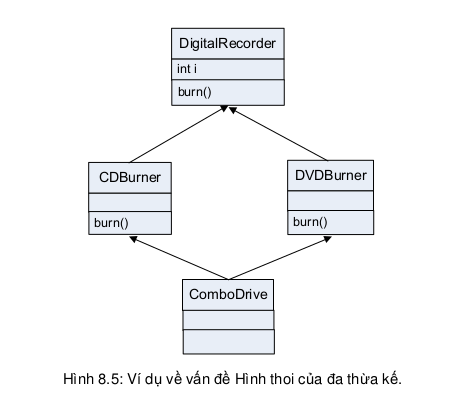

Cây thừa kế động vật vốn được thiết kế để dùng cho bài toán giả lập môi trường sống của động vật. Nếu cần xây dựng phần mềm dạy học cho môn động vật học, ta sẽ tái sử dụng được các lớp trong cây thừa kế đó. Giả sử bây giờ ta mới nhận được yêu cầu xây dựng phần mềm PetShop cho cửa hàng thú cảnh, và ta muốn dùng lớp Dog cho phần mềm mới. Hiện tại các lớp động vật chưa có các hành vi của thú cảnh (Pet) như play() và beFriendly(). Với vai trò lập trình viên cho lớp Dog, ta sẽ làm gì?
Chỉ việc thêm những phương thức cần thiết? Làm vậy ta sẽ không phá vỡ mã của bất kì ai khác vì ta không động đến các phương thức đã có sẵn mà mã của người khác có thể gọi cho các đối tượng Dog.
Đúng nhưng chưa đủ. Lưu ý rằng đây là phần mềm cho cửa hàng thú cảnh, ở đó không chỉ có chó, ta sẽ không chỉ cần đến lớp Dog. Việc bổ sung các phương thức mới vào Dog, do đó, có những nhược điểm gì?
Ta lần lượt xét từng phương án:
Khi lớp con thừa kế từ nhiều hơn một lớp cha, ta có tình trạng được gọi là "đa thừa kế". Hình thức đa thừa kế này có tiềm năng gây ra một rắc rối nghiêm trọng được gọi là Vấn đề Hình thoi (the Diamond problem) như ví dụ trong Hình 8.5. Trong ví dụ đó, hai lớp DVDBurner (thiết bị ghi đĩa DVD) và CDBurner (thiết bị ghi đĩa CD) cùng là lớp con của DigitalRecorder (đầu thu kĩ thuật số), cả hai cài đè phương thức burn() và cùng thừa kế biến thành viên i. Giả sử biến i được dùng tại DVDBurner cũng như CDBurner, nhưng với các giá trị khác nhau. Chuyện gì xảy ra nếu ComboDrive – lớp con thừa kế cả hai lớp trên – cần dùng đến cả hai giá trị i đó? Còn nữa, khi gọi phương thức burn() cho một đối tượng ComboDrive, phiên bản burn() nào sẽ được chạy?
Ngôn ngữ lập trình nào cho phép đa thừa kế sẽ phải giải quyết những tình trạng rối rắm trên, sẽ phải có những quy tắc đặc biệt để xử lý những tình huống nhập nhằng ngữ nghĩa có thể xảy ra. C++ là một trong những ngôn ngữ như vậy. Java được thiết kế theo tiêu chí đơn giản, nên nó không cho phép một lớp được thừa kế từ nhiều hơn một lớp cha.
Vậy ta phải giải quyết bài toán thú cảnh như thế nào với Java?